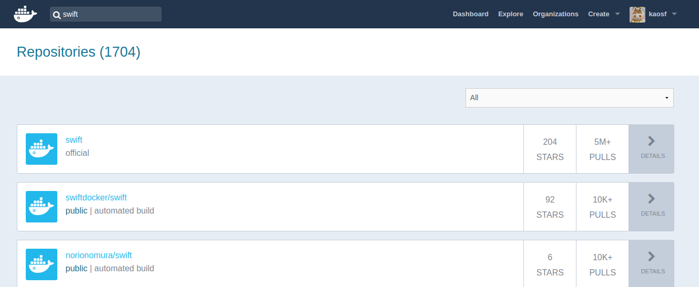

Author
ka

Website: kaosfield
Twitter: ka
GitHub: kaosf
ka
2018-09-15

Copyright (C) 2018 ka
https://kaosf.github.io/20180915-swift-tour-slide
Repository: 20180915-swift-tour-slide - GitHub
初Swiftです
Macbook持ってないので家でMac miniが動いててそれをリモートデスクトップで使う
つまりMac上で普通にスラスラ開発は出来ない
※今日この会場でMacじゃないの自分だけでは？
やるぞ！
一応LinuxでもSwiftのコンパイルは出来るらしいがつらそう
Swiftの利用目的が現状結局iOSアプリかMacアプリ
Swift PlaygroundsがインストールしようとしてもApp Store限定と言われて動かせん
グラフィカルなのやるには環境用意してるだけで時間かかりそうな気がする
そもそもSwift初心者だしと開き直って目標は低めに定める
RxSwiftを理解するとか出来たら良かったけど欲張らない
まずはSwiftに慣れよう
Optional型，パターンマッチ辺りのSwiftでの理解を自分に定着させよう
どうせCLIならUbuntuでやるだけでもいいかもしれん
Vimも使えるし
https://swift.org/download/#releases
を参考にしつつ…
# apt update
# apt -y upgrade
# apt install wget
# wget https://swift.org/builds/swift-4.1.3-release/ubuntu1604/swift-4.1.3-RELEASE/swift-4.1.3-RELEASE-ubuntu16.04.tar.gz
# tar xf swift-4.1.3-RELEASE-ubuntu16.04.tar.gz
# mv swift-4.1.3-RELEASE-ubuntu16.04/usr /usr/local/swift
# export PATH=/usr/local/swift/bin:$PATHあかん
# swift --version
swift: error while loading shared libraries: libatomic.so.1: cannot open shared object file: No such file or directory# apt search libatomicとか探してみてそれらしいものを見つける
じゃあこれで
あかん(2nd)
# swift --version
swift: error while loading shared libraries: libedit.so.2: cannot open shared object file: No such file or directoryまた探してみて以下で
# apt install libedit2いけた！
# swift --version
Swift version 4.1.3 (swift-4.1.3-RELEASE)
Target: x86_64-unknown-linux-gnuと思ったけどhelloworld.swiftを用意してみると…
あかん(3rd)
# swiftc -v helloworld.swift
...
<unknown>:0: error: link command failed with exit code 127 (use -v to see invocation)clangやな
# apt install clangいけた！！
# swiftc helloworld.swiftあかん(4th)
# ./helloworld
./helloworld: error while loading shared libraries: libicuuc.so.55: cannot open shared object file: No such file or directoryそしてとうとう本当に必要だったものを特定しました
(最後に必要だったのはlibicu55)
# apt -y install clang libatomic1 libedit2 libicu55ここまでで参考にしたサイトなど
# echo 'print("Hello World!")' > helloworld.swift
# swift helloworld.swift
Hello World!( ˘⊖˘) 。o(まてよ、Swiftのコンテナイメージがそもそもあるんじゃ……？)
|DockerHub|┗(☋｀ )┓三
( ◠‿◠ )☛

▂▅▇█▓▒░(’ω’)░▒▓█▇▅▂ うわあああああぁぁぁぁぁぁぁ
はい
$ sudo docker run -it swift bash# echo 'print("Hello World!")' > helloworld.swift
# swift helloworld.swift
Hello World!Dockerはべんり
今日Swiftを試せるようになって書いた最大限のコード
func f1(x: Int?) {
if x == nil {
print("nil")
} else {
// print(x) // BAD
print(x!) // NOT GOOD
}
}
func f(_ x: Int?) {
if let x = x {
print(x)
} else {
print("nil")
}
}
func g(_ x: Int?) {
switch x {
case _?: print(x!)
case nil: print("nil")
}
}
let foo: Int? = 1
f1(x: foo)
f(foo)
g(foo)
let bar: Int? = nil
f1(x: bar)
f(bar)
g(bar)Optional型とパターンマッチについて勉強出来たことが分かる
あと関数の引数に「外部引数名」という概念があることが分かった
Swift完全に理解した
おわり